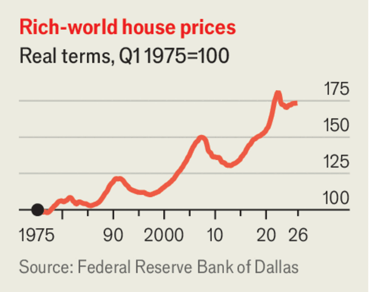

为什么房价可能有麻烦了
Why house prices may be in trouble
在一大盘坏消息里，藏着几粒令人宽慰的碎屑
- 背景：利率再度上行——美国新发30年期房贷利率逼近7%（一年前约6%、疫情前的一半），原因是央行加息压制顽固通胀、政府债务臃肿推高国债收益率。此前2022-23年那轮利率飙升已让购房者的钱包挨过一刀，许多富国房价仍处历史高位附近。
- 这次房价可能真的会跌：与上一轮不同，浮动利率房贷已遍布富国（月供上涨会直接吓退买家）、疫情储蓄已耗尽、住房供给比2010年代略有增加。名义房价大概率跌不了多少（深度衰退之外很少跌），但扣除通胀后的实际下跌可能是健康的消化过程。
- 社论给出三个「跌比涨好」的理由：其一，房价超过负担能力会拖累经济，首次购房者受害最深；其二，跌价能解冻市场——美国房主死守低利率旧房贷，过去四年成交量创金融危机以来新低；其三，提醒人们房子是糟糕的长期投资：不分散、难对冲、回报与工资高度相关，财富越押在房子上，阻挠建房的邻避动机越强。
- 标题里的「既要又要」：特朗普1月对内阁说想让住房更可负担、又要「为有房者推高房价」。文章的立场是：利率上行的原因（通胀、债务、地缘紧张）没有一件值得庆祝，但它对房价的效果，政客应当欢迎。
和许多政客一样，唐纳德·特朗普梦想着蛋糕既有又能吃。1月他对内阁表示，想让住房更可负担，同时又要「为拥有住房的人推高房价」。一个能同时做到两者的政府堪称「蛋糕主义至上」。而在现实世界里，只有房主一直在饱餐：许多富国的房价接近历史最高。购房者却在挨饿——尤其是2022-23年疫情后通胀推高国债收益率、房贷变贵之后。
如今国债收益率再度上行，房贷利率随之走高：央行加息对抗顽固通胀，政府则饱受债务膨胀与财政心痛之苦。美国新发30年期房贷的平均利率正逼近7%，高于一年前的6%出头，几乎是疫情前的两倍。其他富裕国家的借贷成本也在上升。但这一次，结果可能是房价下跌。尽管政客们个个患有蛋糕主义倾向，这却是他们应该欢迎的事。
最新一轮加息尚不像上一轮那样剧烈，但今天的住房市场已不如从前坚韧。浮动利率房贷已在富国遍地开花，月供上涨的前景可能吓退买家——尤其是在家庭大多花光了疫情储蓄的当下。同时，与2010年代相比，住房供给略有增加。
名义房价不太可能大跌——除深度衰退外，房价很少下跌。但即使是扣除通胀后的下跌，也可能是一次健康的消化。

首先，如果许多人买不起房，经济会被拖累，尤其是在驱动21世纪商业的大城市。尽管美国的工资增长稳稳跑赢通胀，但近年来拥有住房的总成本涨得更快。更便宜的房价将格外惠及首次购房者——他们往往攒不齐首付。
房价下跌还可能让住房市场重新活络。过去几年，在固定利率房贷流行的国家（如美国），市场冻得结结实实：房主死守着超低利率的旧合约不肯卖房，过去四年的房屋成交量创下2007-09年全球金融危机以来的新低。这让人们不愿搬去别处寻找更好的工作，压制了经济活力。在今天的经济环境里，房主们可能终于会宁愿现在就卖，而不是等价格进一步下跌。
楼市低迷的最后一个好处，是提醒人们：房子是一种糟糕的长期投资。几十年来，各国政府一直让家庭把住房当作储蓄工具，并在许多国家慷慨地给房主税收优惠。作为资产，房子有其优点：投资者可以因其流动性差而获得溢价，它也让普通人得以使用财务杠杆（零售期权交易的疯狂世界另当别论）。
然而，把住房当作金融资产违背了投资的一些基本信条——价格下跌时这一点暴露无遗。它不分散（除非你是连环房东），相关风险难以对冲（保险只保得了一部分），回报与你的未来收入高度相关（一场衰退可能同时砸低你的工资和你的房产价值）。此外，一个家庭的财务越是拴在房子上，邻避诱惑就越大——越是阻挠开发，越怕稀释自家房价。
这轮利率上行的原因——通胀、债务、地缘紧张——没有一件值得欢呼。但它对房价的影响，或许能提供几粒蛋糕碎屑般的宽慰。